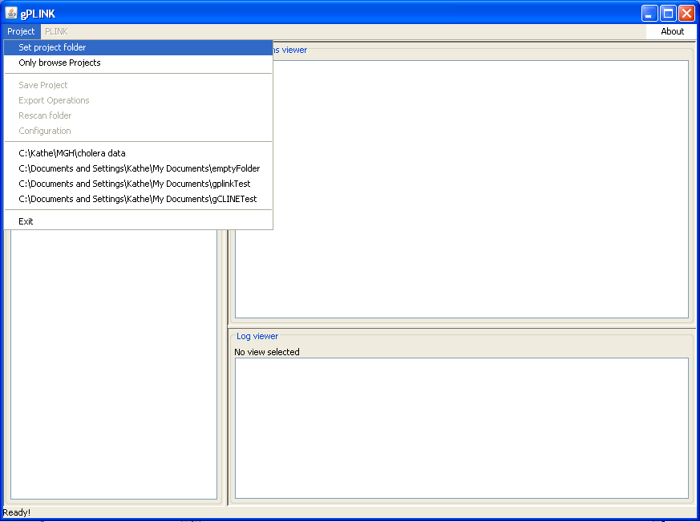

|  |
Setting the project foldersInitiatlly, one must set the local project folder. Optionally, if running gPLINK in remote mode (where the data and computation reside on a remote server), we will also set the remote project folder as well.Previous | Next |